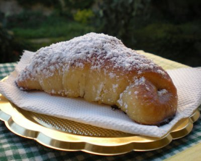

mini
BLOG
1.0
Photo gallery
H
ome
Privacy policy
Terms and Conditions
Photo gallery
Contacts
Menu
10 ricette dei cocktail più famosi da fare a casa | ALDI
Cocktail analcolici: 16 ricette facili e sfiziose | Buttalapasta
I 5 cocktail da bere anche al mattino | DeAbyDay
Cocktail a domicilio per i momenti di sconforto - Il Mattino.it
I 5 cocktail da bere anche al mattino - MSN
Good Morning Cocktail, i drink mattutini di Roma | Coqtail Milano
Cocktail analcolici, 5 idee per bere un buon drink
Irish coffee, Ricette, Caffè del mattino - Bevande . - Pinterest
Le dei migliori alcolici facili da fare a casa, tutti i consigli gustare . serale ma perfetto anche se consumato durante il brunch o al .
I 20 migliori cocktail da aperitivo alcolico e analcolico
8 ricette Capodanno 2020 per cocktail golosi per brindare
Check it out!
10 ricette dei cocktail più famosi da fare a casa | ALDI
Cocktail analcolici: 16 ricette facili e sfiziose | Buttalapasta
I 5 cocktail da bere anche al mattino | DeAbyDay
Cocktail a domicilio per i momenti di sconforto - Il Mattino.it
I 5 cocktail da bere anche al mattino - MSN
Good Morning Cocktail, i drink mattutini di Roma | Coqtail Milano
Cocktail analcolici, 5 idee per bere un buon drink
Irish coffee, Ricette, Caffè del mattino - Bevande . - Pinterest
I 20 migliori cocktail da aperitivo alcolico e analcolico
8 ricette Capodanno 2020 per cocktail golosi per brindare
Photo gallery

Posted
28 Comments